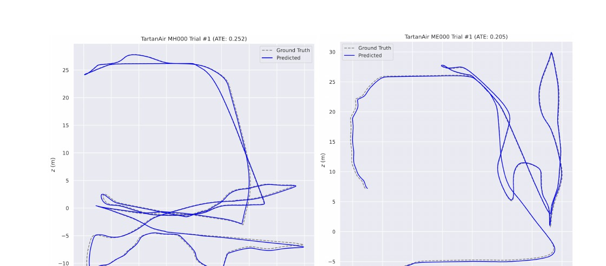

Kirby benchmark progress
AI/ML Engineer × Robotics
Tempe, AZ · 33.4255° N
I build AI
that sees,
remembers
& acts.
I build multimodal agents, robot-perception pipelines, and autonomous systems—then test them through benchmarks, ablations, and real engineering constraints.
Python · PyTorch · ROS2 · LangGraph · AWS

M.S. ROBOTICS
@ ASU
@ ASU
OPEN TO
AI/ML + ROBOTICS
AI/ML + ROBOTICS
Best average reward
Failures across 20 episodes
Lowest average ATE
01 Practice
Research rigor.
Builder energy.
My work sits between machine intelligence and physical autonomy. I turn uncertain research questions into working systems, then use evaluations and ablations to understand why they work.
02 Selected work
Built. Tested.
Proven.
Three deep dives from the résumé, plus more systems spanning manipulation, distributed robotics, and TinyML.
Live agent run / VideoGameBench-Lite
Multimodal VLM Agent With Semantic Memory + Context Engineering
A ReAct-style agent with OCR tools, semantic retrieval, episodic state tracking, and cosine-similarity loop detection for long-horizon visual reasoning.
5% → 20%+
Kirby progress after redesigning short-term and episodic memory
What I built
Retrieval-augmented memory with MiniLM embeddings, transformer-based perception, OCR tool use, and state-continuity safeguards.
How I measured it
Evaluated Kirby, Doom II, Pokémon Crystal, and Super Mario Land for completion, loop reduction, and token efficiency.
Evolved gait / BipedalWalker-v3
NEAT for Stable Bipedal Locomotion
Evolved neural controllers and compared speed-only, energy-efficiency, and stability-aware fitness functions.
272.92best average reward
0%failure rate / 20 episodes
+48.73reward from structural mutation
Ablation evidence
A fixed-topology comparison showed that evolving structure—not only weights—was critical for escaping local optima.
What did not transfer
Curriculum learning accelerated early training but did not carry to hardcore terrain, suggesting catastrophic forgetting.

Trajectory comparison / TartanAir
Deep Patch Visual Odometry Ablation
Tested Euclidean distance, ConvLSTM, softmax-temperature tuning, and Gradient-based Temporal Attention against the DPVO baseline.
0.21 m ATE
Best average result across 16 TartanAir sequences
Experimental setup
Benchmarked four architectural modifications on an NVIDIA RTX 4090 and replicated published results within centimeters.
Strongest variant
Softmax-temperature tuning produced the lowest average Absolute Trajectory Error across the full test set.
More systems / 03
From pixels to motion.
04 / Manipulation · 2025
ROS Pick-and-Place Block Sorting
Vision-to-motion sorting with HSV segmentation, depth, transforms, MoveIt, and a finite-state controller.
Repository ↗05 / Multi-robot systems · 2025
Distributed Disaster Response
Twelve simulated robots coordinate supply delivery through Voronoi coverage, greedy task allocation, refill logic, and safe separation.
Repository ↗06 / TinyML
Embedded Intelligence, Made Small
Low-power IMU posture classification, keyword spotting, and quantized on-device inference on Arduino Nano 33 BLE Sense.
TensorFlow Lite Micro · Quantized models
03 Experience
Systems work,
in the real world.
Capgemini
Software Analyst Intern
Built maintainable test automation and validation workflows for web application modules.
30–40%
estimated reduction in manual regression effort
- Automated end-to-end scenarios with Selenium WebDriver, Java, TestNG, Maven, and Page Object Model.
- Authored test plans, test cases, and review templates to improve coverage and requirement traceability.
- Validated APIs with Postman and executed functional and regression tests in a hybrid framework.
Codeyoung
Experienced Trainer
Mentored K–12 students through project-based Python and Scratch learning.
Education / 01
Arizona State UniversityTempe, AZ
M.S. Robotics & Autonomous Systems (AI)
AchievementNAMU Scholarship Holder
Relevant coursework
- Artificial Intelligence
- Robotic Systems I
- Natural Language Processing
- Linear Algebra
- Multi-Robot Systems
- Perception in Robotics
- Embedded ML
- Bio-Inspired AI & Optimization
- Machine Learning & Deep Learning
- Advances in Robot Learning
Aug 2024—May 2026
CGPA3.90 / 4.00
Education / 02
MIT-ADT UniversityPune, India
B.Tech. Electronics & Communication Engineering
AchievementSecond Rank Holder
Relevant coursework
- Electronic Devices & Circuits
- Signals & Systems
- Digital Logic Design
- Data Structures & Algorithms
- Control Systems
- Embedded Processors
- Microprocessors & Microcontrollers
- VLSI System Design
- Internet of Things (IoT)
Aug 2019—Jul 2023
CGPA8.60 / 10.003.54 / 4.0 US equiv.
04 Published research
IJIRT · Volume 9 · Issue 12 · May 2023
Underwater Image Surveillance / Recognition
Research on an autonomous underwater vision system using CNN-based transfer learning for recognition in low-visibility conditions.
05 Technical stack
The whole
toolbox.
From model architecture to robot hardware, cloud services, and validation.
AI / ML
PyTorch · LangChain · LangGraph · RAG · FAISS · Chroma · LLMs · VLMs · NLP · Machine Learning · Deep Learning · Neural Networks · Agentic AI · Computer Vision · Reinforcement Learning · OpenCV
Robotics
ROS / ROS2 · Gazebo · SLAM · Motion Planning · Path Planning · Sensor Fusion · MoveIt · Visual Odometry
Engineering
Python · C / C++ · MATLAB · Linux · Docker · Git · Shell Scripting · APIs · Test Automation
Cloud
AWS Lambda · API Gateway · S3 · DynamoDB · Bedrock · Anthropic Claude API
Validation
Selenium WebDriver · Java · TestNG · Maven · Postman · Page Object Model · Benchmark Design · Ablation Studies
Hardware
MyCobot Pro 600 · Raspberry Pi · ATmega · Arduino · Embedded ML · Hardware Integration
06 Contact
Open to AI/ML, agentic systems & robotics roles
Let’s build something that works beyond the demo.
I’m interested in teams turning ambitious AI and robotics ideas into reliable, measurable systems.